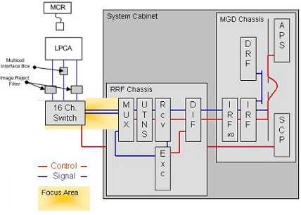
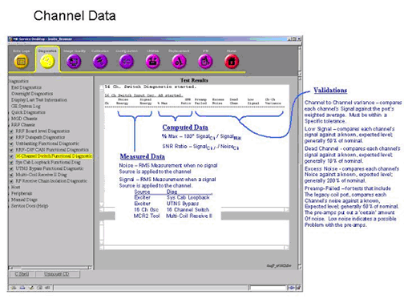
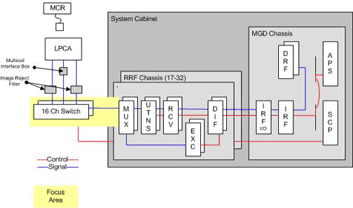

- 00000018WIA30A58E20GYZ
- id_131074693.0
- Aug 29, 2019 1:41:48 AM
16-Channel Switch Functional Diagnostic
Diagnostic Path
Diagnostics > RRF Chassis > 16-Channel Switch Functional Diagnostic
Purpose
The purpose of the 16-Channel Switch Functional Diagnostic is to identify RF signal problems with receive signal paths from the 16-channel switch. This test is functionally identical to the 16-Channel Switch Datapath Diagnostic, but the functional diagnostic allows for more test options and gives more detailed results on the test main screen.
The functional diagnostic uses the oscillators inside the 16-channel switch. Noise (oscillators off) and signal (oscillators on) measurements are performed for a variety of tests that are based on port selection.
Oscillator control is achieved via the SCP to the driver link via CAN communications, then to the 16-channel switch. The signal path is routed from the 16-channel switch to the RRF chassis. Within the chassis, the signal is routed through the MUX, UTNS, receiver, and RRF-DIF boards. Lastly, the signal is routed to the IRF I/O, IRF, and then the DRF via the receive bus.
This switch diagnostic should be performed in conjunction with the System Cabinet Loopback Diagnostic. See Table 1 to analyze the results of these two diagnostics. Because hardware for the diagnostics is similar, a truth table can be used to isolate problems.
For fault isolation between the LPCA and the input ports of the 16-channel switch, use the Multi-Coil Receive Diagnostic.
For further isolation, run the RRF Receive Chain FRU Isolation Diagnostic.
Components Tested
-
16-channel switch
-
Cabling between the 16-channel switch and the MUX board(s)
-
Receive chain (MUX, UTNS, receiver boards)
Requirements
-
Run this diagnostic in conjunction with the System Cabinet Loopback Diagnostic.
-
Disconnect all coils from the LPCA.
Block Diagram


Test Sequence
-
Select 16-Channel Switch Functional Diagnostic.
In some cases, running a sub-test is the best way to isolate failures. Sub-tests are:
-
Test Input Osc A and B Ports
-
Test Input Osc O and B Ports
-
Test Input Osc L and B Ports
-
Test Input Osc B and -- Ports
-
Test Output Osc O and B Ports
For descriptions of sub-tests see Expected Results.
When 16-channel depopulated switch hardware is installed, only A port testing is performed.
-
-
Click Run.
Do not change the Test Options settings from the default settings unless instructed to do so by a GE Healthcare engineer. There are very few circumstances when these settings ever need to be changed.
When the Constraints option is selected, the test will run with coils. This could adversely affect test results.
-
Results for this diagnostic are displayed as pass/fail information.
In the event of an error, consult the summary file:
/usr/g/service/datamine/rxOsc_Summary.log
-
Examine the results and take the appropriate action. For assistance with analyzing the results, see Figure 3.
Because values for this test can vary widely from system to system, benchmarks are specific to the system type. Therefore, if a test fails, the log will indicate the tolerance level for the failed test.



Expected Results
The diagnostic returns PASS or FAIL. The GE Sys Log identifies errors. The /usr/g/service/datamine directory contains detailed results files and the rxOsc_Summary.log summary file. Detailed results are logged in the summary file /usr/g/service/datamine/rxOsc_Summary.log.
Actual signal data is logged in data files in /usr/g/service/datamine directory.

When executed in conjunction with the System Cabinet Loopback Diagnostic, system problems can be isolated to (1) the signal source – the exciter; (2) the RRF chassis receive chain – the MUX, UTNS, and receiver boards; or (3) the 16-channel switch, cabling, and hardware, and input port on the MUX boards.
| Sys Cab Loopback | 16-Channel Switch | Results/Action |
|---|---|---|
| Failed | Failed | Problem within the RRF chassis. Isolate the receive chain. |
| Failed | Passed | Problem with signal source for the Sys Cab Loopback. Check the exciter, cabling, and possible RF chassis hardware such as power, backplane, etc. |
| Passed | Failed | Problem isolated to the 16-channel switch, passive components back to the RRF chassis, or possibly a bad MUX board. |
| Passed | Passed | Receive chain from the 16-channel switch appears to be functioning. Run the Multi-Coil Receive Diagnostic to examine the signal path from the LPCA to the 16-channel switch. |
Output Sub-Test
If there is a failure after running the primary test, run the output sub-test. If this sub-test passes, the failure did not occur between the 16-channel switch and the system cabinet.
• Test Output Osc O and B Ports
Input Sub-Tests
If the output sub-test passes and any of the input sub-tests fail, replace the 16-channel switch.
If the output sub-test fails and these input sub-tests fail, there is probably a failure between the 16-channel switch and the LPCA. To identify the failure, run the MCR Diagnostic.
-
Test Input Osc A and B Ports
-
Test Input Osc O and B Ports
-
Test Input Osc L and B Ports
-
Test Input Osc B and -- Ports
-
Test Output Osc O and B Ports
When 16-channel depopulated switch hardware is installed, only A port testing is performed.
Other Information
For fault isolation between the LPCA and the input ports of the 16-channel switch, use the Multi-Coil Receive Diagnostic.
For further isolation, run the RRF Receive Chain FRU Isolation Diagnostic.
Links
None